Code
# Data
data_ev <- read.csv("Data/EV_Population.csv")
cat("Jumlah Baris:",nrow(data_ev),
"\nJumlah Kolom:", ncol(data_ev))Jumlah Baris: 92676
Jumlah Kolom: 8Code
datatable(data_ev %>% head(100))# Data
data_ev <- read.csv("Data/EV_Population.csv")
cat("Jumlah Baris:",nrow(data_ev),
"\nJumlah Kolom:", ncol(data_ev))Jumlah Baris: 92676
Jumlah Kolom: 8datatable(data_ev %>% head(100))Grafik garis untuk menunjukkan perubahan data dalam rentang waktu tertentu.
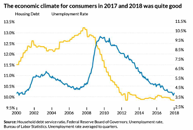
# Buat Data Contoh
data_dual <- data.frame(
Year = seq(2000, 2018, by = 1),
Housing_Debt = c(10, 10.2, 10.5, 10.8, 11.2, 11.5, 11.8, 12.3, 12.8, 13.1, 13.4, 13.2, 12.8, 12.3, 11.7, 11.2, 10.8, 10.5, 10.3),
Unemployment_Rate = c(4, 4.2, 5.0, 5.5, 5.8, 6.0, 6.5, 7.0, 9.0, 10.0, 9.8, 9.5, 8.5, 7.5, 6.3, 5.5, 4.8, 4.2, 3.9)
)
# Reshape data untuk ggplot
data_long <- data_dual %>%
pivot_longer(cols = c("Housing_Debt", "Unemployment_Rate"),
names_to = "Variable", values_to = "Value")
# Plot
ggplot(data_long, aes(x = Year, y = Value, color = Variable)) +
geom_line(linewidth = 1.2) +
scale_y_continuous(
name = "Housing Debt (%)",
sec.axis = sec_axis(~ ., name = "Unemployment Rate (%)")
) +
scale_color_manual(values = c("Housing_Debt" = "blue", "Unemployment_Rate" = "gold")) +
labs(title = "The Economic Climate for Consumers in 2017 and 2018",
subtitle = "Comparison of Housing Debt and Unemployment Rate",
x = "Year",
y = "Housing Debt (%)") +
theme_minimal() +
theme(legend.title = element_blank())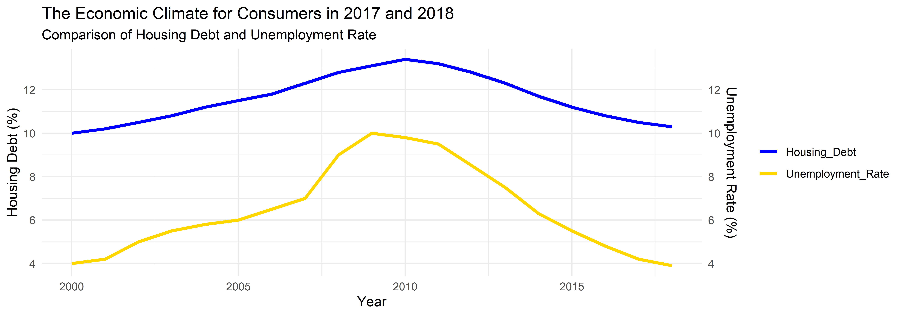
Versi melingkar dari grafik garis, sering digunakan untuk data musiman.
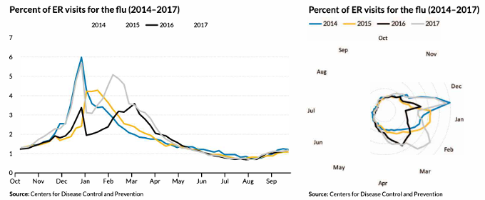
# Buat Data Simulasi
set.seed(123)
data_circular <- expand.grid(
Month = month.abb,
Year = c(2014, 2015, 2016, 2017)
) %>%
mutate(ER_Visits = runif(nrow(.), 1, 6)) # Simulasi data kunjungan IGD
# Konversi Bulan ke Faktor agar sesuai urutan
data_circular$Month <- factor(data_circular$Month, levels = month.abb)
# Plot Circular Line Chart
ggplot(data_circular, aes(x = Month, y = ER_Visits, group = Year, color = as.factor(Year))) +
geom_line(linewidth = 1) +
scale_y_continuous(limits = c(0, 7)) +
coord_polar(start = 3.14) + # Mengatur agar Januari dimulai dari atas
scale_color_manual(values = c("2014" = "blue", "2015" = "orange", "2016" = "gray", "2017" = "black")) +
labs(title = "Percent of ER Visits for the Flu (2014–2017)",
subtitle = "Circular Line Chart Representation",
x = "", y = "Percent ER Visits", color = "Year") +
theme_minimal() +
theme(axis.text.x = element_text(size = 10, face = "bold"),
legend.position = "top")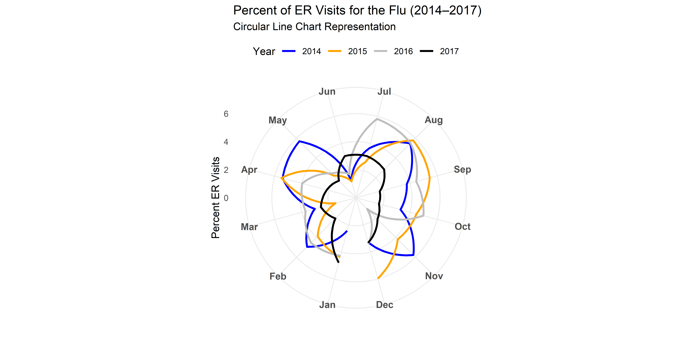
# Buat Data Simulasi (Sama seperti sebelumnya)
set.seed(123)
data_line <- expand.grid(
Month = month.abb,
Year = c(2014, 2015, 2016, 2017)
) %>%
mutate(ER_Visits = runif(nrow(.), 1, 6)) # Simulasi data kunjungan IGD
# Konversi Bulan ke Faktor agar sesuai urutan
data_line$Month <- factor(data_line$Month, levels = month.abb)
# Plot Line Chart Standar
ggplot(data_line, aes(x = Month, y = ER_Visits, group = Year, color = as.factor(Year))) +
geom_line(size = 1) +
geom_point(size = 2) + # Tambahkan titik di setiap bulan
scale_y_continuous(limits = c(0, 7)) +
scale_color_manual(values = c("2014" = "blue", "2015" = "orange", "2016" = "gray", "2017" = "black")) +
labs(title = "Percent of ER Visits for the Flu (2014–2017)",
subtitle = "Line Chart Representation",
x = "Month", y = "Percent ER Visits", color = "Year") +
theme_minimal() +
theme(axis.text.x = element_text(size = 10, face = "bold", angle = 45, hjust = 1),
legend.position = "top")Warning: Using `size` aesthetic for lines was deprecated in ggplot2 3.4.0.
ℹ Please use `linewidth` instead.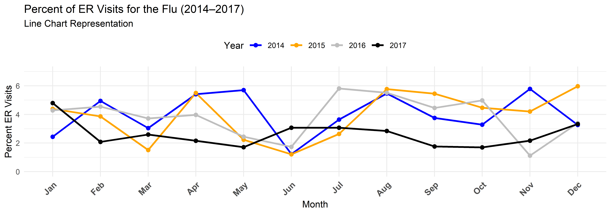
Menunjukkan perubahan data antara dua titik waktu.
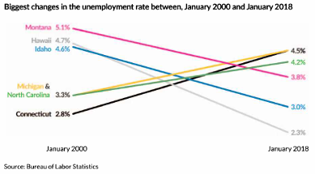
# Buat Data Simulasi
slope_data <- data.frame(
State = c("Montana", "Hawaii", "Idaho", "Michigan", "North Carolina", "Connecticut"),
Unemployment_2000 = c(5.1, 4.7, 4.6, 3.3, 3.3, 2.8), # Data tahun 2000
Unemployment_2018 = c(4.5, 4.2, 3.8, 4.2, 3.0, 2.3) # Data tahun 2018
) %>%
tidyr::pivot_longer(cols = starts_with("Unemployment"),
names_to = "Year", values_to = "Rate") %>%
mutate(Year = recode(Year,
"Unemployment_2000" = "January 2000",
"Unemployment_2018" = "January 2018"))
# Plot Slope Chart
ggplot(slope_data, aes(x = Year, y = Rate, group = State, color = State)) +
geom_line(size = 1.2) +
geom_point(size = 3) +
geom_text(data = slope_data %>% dplyr::filter(Year == "January 2000"),
aes(label = paste0(State, " ", Rate, "%")),
hjust = 1.1, size = 4) +
geom_text(data = slope_data %>% dplyr::filter(Year == "January 2018"),
aes(label = paste0(Rate, "%")),
hjust = -0.1, size = 4) +
scale_x_discrete(expand = expansion(mult = c(0.2, 0.2))) +
scale_y_continuous(limits = c(2, 6)) +
labs(title = "Biggest Changes in the Unemployment Rate",
subtitle = "Between January 2000 and January 2018",
x = "", y = "Unemployment Rate (%)") +
theme_minimal() +
theme(legend.position = "none",
axis.text.x = element_text(size = 12, face = "bold"),
axis.text.y = element_text(size = 10),
plot.title = element_text(size = 14, face = "bold"),
plot.subtitle = element_text(size = 12))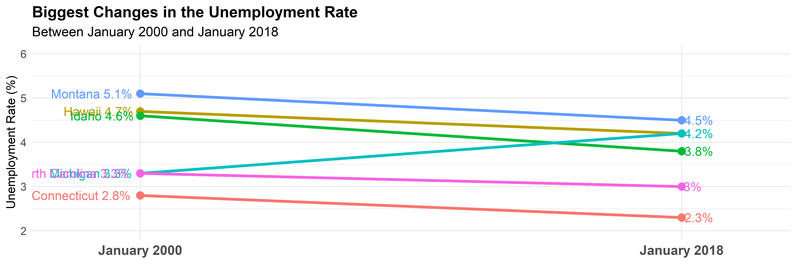
Garis kecil yang menunjukkan tren singkat dalam dataset.
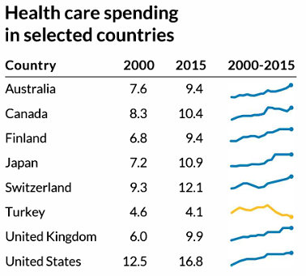
Menampilkan perubahan peringkat suatu kategori seiring waktu.
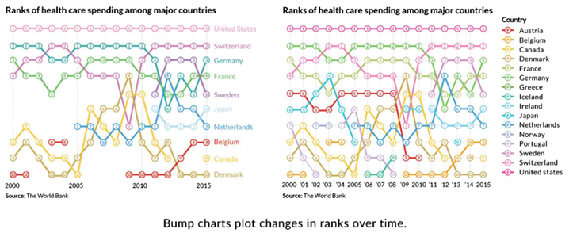
# Buat Data Simulasi
bump_data <- data.frame(
Year = rep(seq(2000, 2015, 5), each = 8), # Tahun dalam interval 5 tahun
Country = rep(c("United States", "Switzerland", "Germany", "France", "Sweden",
"Japan", "Netherlands", "Canada"), times = 4),
Rank = c(1, 2, 3, 4, 5, 6, 7, 8,
1, 2, 4, 3, 6, 5, 8, 7,
1, 2, 3, 5, 4, 7, 6, 8,
1, 2, 3, 4, 5, 6, 7, 8) # Peringkat tiap negara
)
# Plot Bump Chart
ggplot(bump_data, aes(x = Year, y = Rank, group = Country, color = Country)) +
geom_bump(size = 1.5) + # Garis smooth bump chart
geom_point(size = 3) + # Titik pada setiap peringkat
geom_text(aes(label = Country), data = bump_data %>%
dplyr::filter(Year == max(Year)),
hjust = -0.2, size = 4, fontface = "bold") + # Label negara di akhir
scale_y_reverse(breaks = 1:8) + # Mengurutkan peringkat dari atas ke bawah
scale_x_continuous(breaks = seq(2000, 2015, 5)) +
labs(title = "Ranks of Health Care Spending Among Major Countries",
x = "Year", y = "Rank") +
theme_minimal() +
theme(legend.position = "none",
panel.grid.major.x = element_blank(),
panel.grid.minor.x = element_blank(),
axis.text.x = element_text(size = 10),
axis.text.y = element_text(size = 10))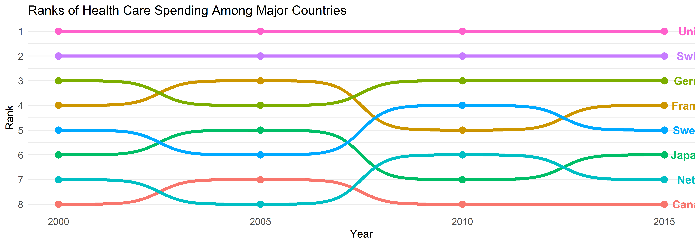
Cycle Chart adalah grafik yang digunakan untuk membandingkan pola data dalam unit waktu kecil (minggu, bulan, dll.) dalam jangka waktu multi-tahun. Grafik ini berguna untuk menampilkan tren musiman dalam data.
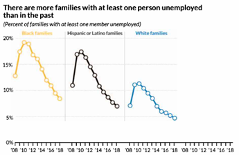
Area Chart adalah varian dari line chart di mana area di bawah garis diisi dengan warna untuk memberikan bobot visual yang lebih jelas pada data. Grafik ini digunakan untuk menunjukkan tren perubahan nilai numerik dari waktu ke waktu.
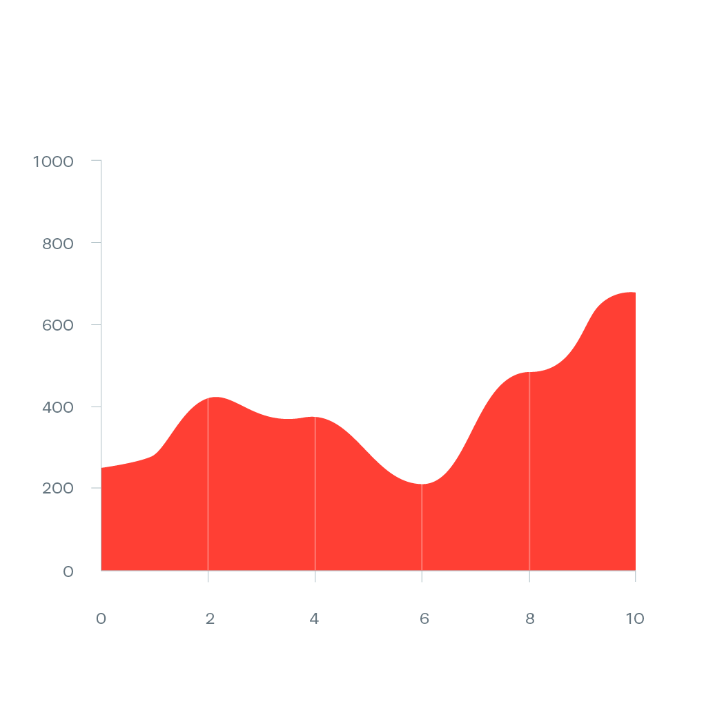
# Buat Data Simulasi
set.seed(123)
data <- data.frame(
x = seq(0, 10, by = 1),
y = cumsum(runif(11, min = -50, max = 100)) + 200 # Nilai kumulatif agar ada pola naik-turun
)
# Plot Area Chart
ggplot(data, aes(x = x, y = y)) +
geom_area(fill = "red", alpha = 0.8) + # Area dengan warna merah
theme_minimal() +
labs(title = "Area Chart", x = "", y = "")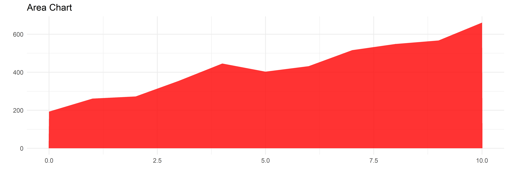
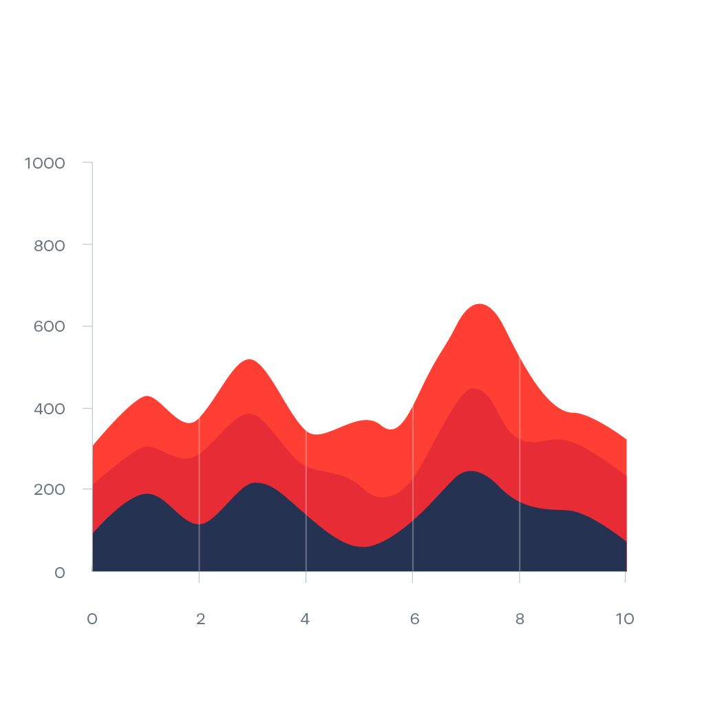
Stacked Area Chart adalah varian dari area chart yang digunakan untuk menampilkan beberapa seri data secara simultan, di mana setiap area saling ditumpuk sehingga nilai totalnya dapat terlihat dengan jelas. Grafik ini sering digunakan untuk menunjukkan perubahan distribusi data seiring waktu.
# Buat Data Simulasi
set.seed(123)
data <- data.frame(
x = rep(seq(0, 10, by = 1), 3), # Sumbu X yang sama untuk semua kategori
y = cumsum(runif(11, min = 50, max = 150)), # Seri 1
y2 = cumsum(runif(11, min = 40, max = 120)), # Seri 2
y3 = cumsum(runif(11, min = 30, max = 90)) # Seri 3
)
# Ubah Data ke Format Long
data_long <- data %>%
pivot_longer(cols = c(y, y2, y3), names_to = "Category", values_to = "Value")
# Plot Stacked Area Chart
ggplot(data_long, aes(x = x, y = Value, fill = Category)) +
geom_area(alpha = 0.8) + # Area chart dengan transparansi
scale_fill_manual(values = c("#1C1F38", "#E63946", "#F76C5E")) + # Warna seperti di gambar
theme_minimal() +
labs(title = "Stacked Area Chart", x = "", y = "")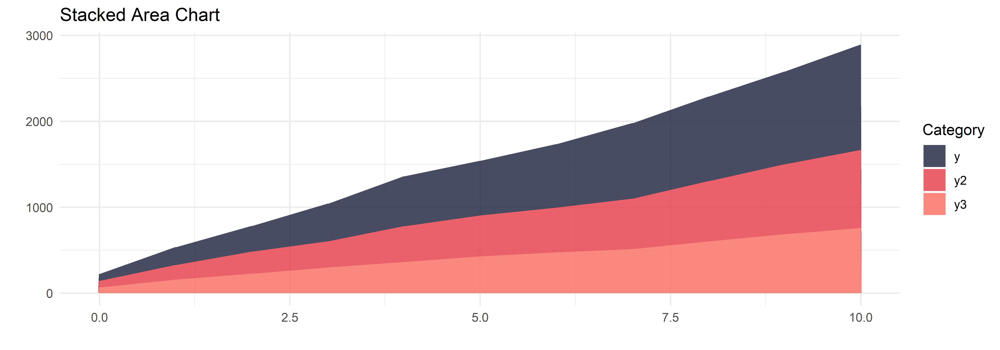
Menampilkan perubahan dalam data kategorikal dengan bentuk yang mengalir.
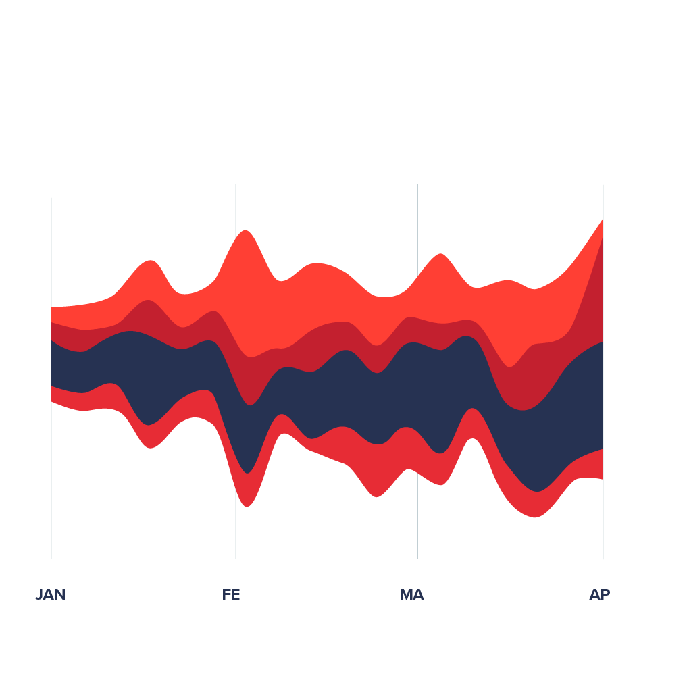
Horizon Chart adalah varian dari Area Chart yang digunakan untuk menampilkan data deret waktu dengan cara yang lebih padat dan efisien. Grafik ini bekerja dengan membagi area chart menjadi beberapa band horizontal, lalu menumpuknya untuk mengurangi ruang yang digunakan.
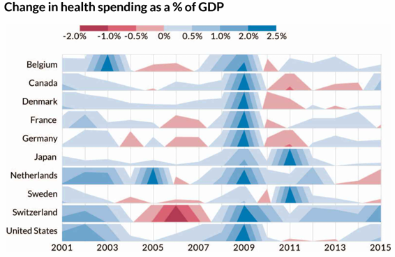
Gantt Chart adalah jenis grafik yang digunakan untuk menampilkan jadwal, proses, atau durasi tugas dengan menggunakan batang horizontal. Grafik ini sering digunakan dalam manajemen proyek, shift kerja, dan pelacakan jadwal produksi.
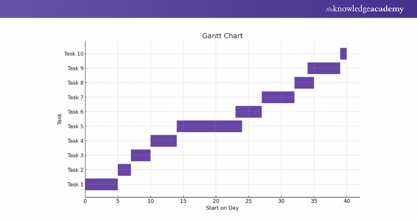
# Buat dataset proyek simulasi
gantt_data <- data.frame(
Task = factor(paste("Task", 1:10), levels = rev(paste("Task", 1:10))), # Nama tugas (dibalik untuk urutan yang lebih baik)
Start = seq(1, 40, by = 4), # Hari mulai
Duration = c(3, 5, 6, 4, 8, 7, 6, 5, 4, 3) # Durasi dalam hari
)
# Tambahkan kolom End (Hari selesai)
gantt_data <- gantt_data %>%
mutate(End = Start + Duration)
# Plot Gantt Chart
ggplot(gantt_data, aes(y = Task, xmin = Start, xmax = End, fill = Task)) +
geom_rect(aes(xmin = Start, xmax = End, ymin = as.numeric(Task) - 0.4, ymax = as.numeric(Task) + 0.4),
color = "black") +
scale_fill_viridis_d() +
labs(title = "Gantt Chart",
x = "Start on Day",
y = "Task") +
theme_minimal() +
theme(legend.position = "none")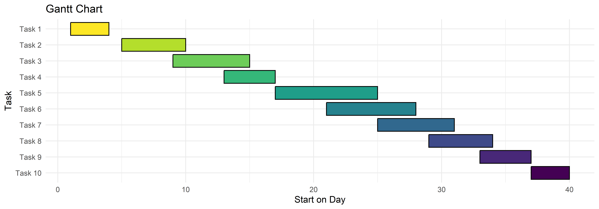
Flow Charts dan Timelines adalah dua jenis visualisasi yang digunakan untuk menampilkan perubahan, proses, atau hierarki secara kronologis atau langkah demi langkah.
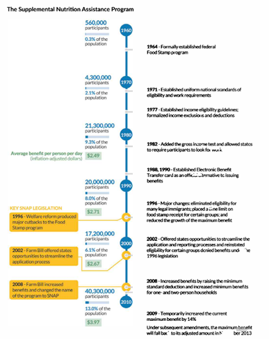
Connected Scatterplot adalah metode visualisasi yang digunakan untuk menunjukkan hubungan antara dua deret waktu dalam satu grafik, tanpa menggunakan dual-axis line chart.
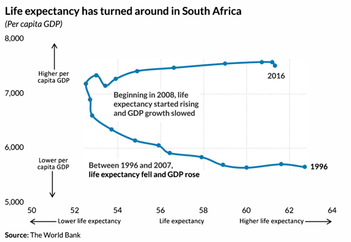 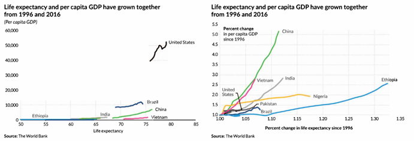
Ringkasan konsep visualisasi deret waktu.